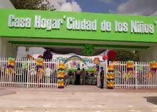

Introducción al Proyecto
Este sitio presenta el proyecto de investigación sobre *La Casa Hogar de Chetumal*, una institución dedicada al cuidado, protección y formación de niñas, niños y adolescentes en situación vulnerable.
|  |
¿Qué es una Casa Hogar?
Una casa hogar es una institución que proporciona alojamiento, alimentación, educación y atención emocional a menores de edad que han sido víctimas de abandono, violencia o pobreza extrema. Su objetivo principal es brindar un entorno seguro y afectivo que favorezca el desarrollo integral de los menores.